Familia de mi gata :D
Shaula Suhail Paz Garay - A01712013 - a01712013@tec.mx

Abuelo (?

Nombre: Maximiliano
Apodo: Max
Especie: Humano
Apodo: Max
Especie: Humano
Max adoptó multiples gatitos que con el tiempo se multiplicaron por sí mismos. Le gustan los animalitos, por lo que está estudiando veterinaria. Después de que
sus gatos tuvieran retoñitos, dió en adopción a muchos de estos, encontrando diversas familias para ellos. Una de esas gatitas dades en adopción fue la Apestosa.
Actualmente, los padres de la Apestosa siguen a su cuidado, se les ve felices y sanos.
Papá y Mamá


Nombre: Mittens
Apodo: N/A
Especie: Gato
Nombre: Sog
Apodo: N/A
Especie: Gato
Apodo: N/A
Especie: Gato
Nombre: Sog
Apodo: N/A
Especie: Gato
Estos gatitos se enamoraron hace tiempo. Tuvieron varios hijos, entre ellos la Apestosa. Aunque no sabemos a ciencia cierta que la camada de la Apestosa es de este gato, la fé nos impulsa a creerlo.
Este gato se hizo responsable de los gatitos que tuvo Mittens, esto después de tener un tema con la camada de la madrastra. Hubo un cambio de personaje, pues el padre era un desnaturalizado e incluso esposo agresor,
pero después del drama entró en razón, y no se le puede hacer responder por sus actos por ser un gato. Actualmente los dos viven tranquilos con Max.
Mittens crió a los hijos de la otra gata a pesar de que esta les dio la espalda, siendo no solo madre responsable, sino madrastra responsable y presente. Los gatos crecieron como hermanos debido a que sus crias no nacieron con mucho tiempo de diferencia.
Las cosas están más tranquilas ahora y todos viven en paz y harmonía.
Mittens crió a los hijos de la otra gata a pesar de que esta les dio la espalda, siendo no solo madre responsable, sino madrastra responsable y presente. Los gatos crecieron como hermanos debido a que sus crias no nacieron con mucho tiempo de diferencia.
Las cosas están más tranquilas ahora y todos viven en paz y harmonía.
Apestosa
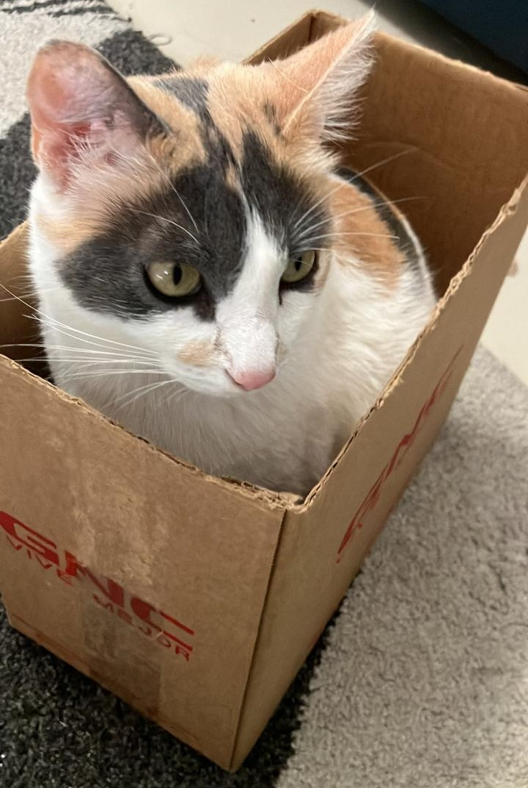
Nombre: Apestosa
Apodos: Nix,
Miau, Hermosa
Especie: Gato
Apodos: Nix,
Miau, Hermosa
Especie: Gato
Adoptada al mes de nacida, la Apestosa tiene 2 años viviendo en mi casa. Es muy tranquila y le gusta salir al patio a pasar el tiempo, sin embargo no escapa. No juega mucho y pasa la mayor parte del
tiempo durmiendo o comiendo. Nuestra primer gata, que nos enseñó lo que es lidiar con rasguños en los muebles, limpiar cajas de arena y ser sirvientes de una mascota.
Le gusta entrar a cajas cuando tiene la oportunidad y en general evita los problemas, pero la Mi logra sacarla de sus casillas a menudo, aunque la Apestosa no parece tener resentimiento, solo precaución para no tener que lidiar con la violencia tan a menudo.
Le gusta entrar a cajas cuando tiene la oportunidad y en general evita los problemas, pero la Mi logra sacarla de sus casillas a menudo, aunque la Apestosa no parece tener resentimiento, solo precaución para no tener que lidiar con la violencia tan a menudo.
Hermanos

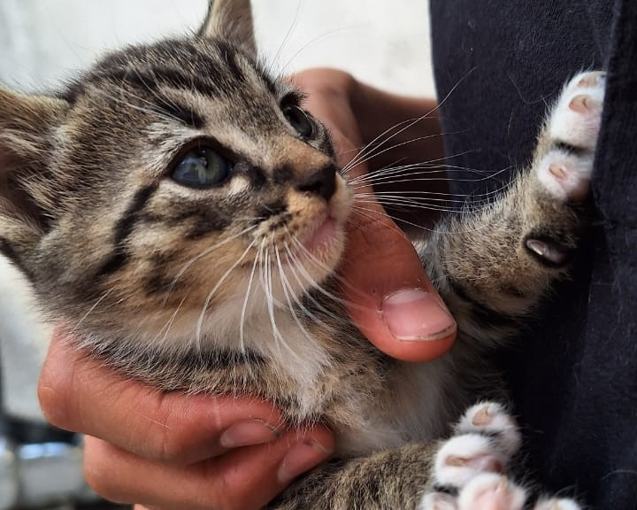

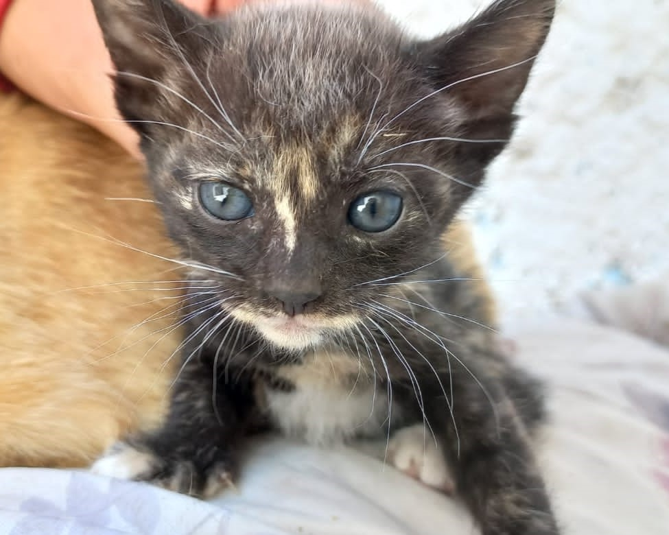


Madrastra
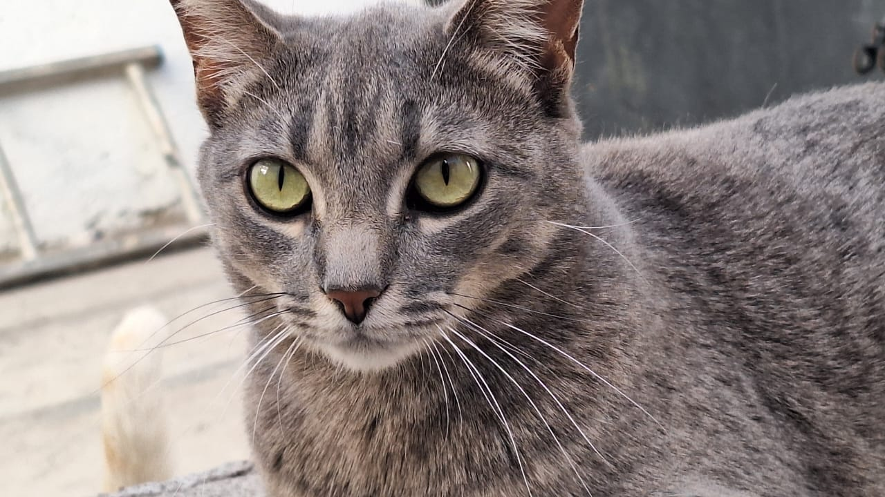
Nombre: Scott
Apodo: N/A
Especie: Gato
Apodo: N/A
Especie: Gato
La madrastra de la Apestosa tuvo hijos del padre de la Apestosa, pero decidió que no sería una madre presente, por lo que dejó a sus hijos a su suerte. La mamá de la Apestosa decidió cuidarlos
Actualmente sigue viviendo con Max, aunque va por su propio lado sin ser parte de la familia feliz de gatos que vive ahí. El padre de la Apestosa se comportó violentamente durante su "matrimonio"
pero hoy en día viven en paz.
Media Hermana

Nombre: Chiquitín
Apodo: N/A
Especie: Gato
Apodo: N/A
Especie: Gato
No se posee mucha información, pero se ve linda.
Papás Adoptivos
Nombre: Bertha
Apodo: Madre Mía
Especie: Humano
Madre: Alimenta regularmente a la Apestosa. Le corta la fruta porque la señorita no come cualquier cosa y le gusta esclavizar humanos. Casada felizmente con mi padre. Eligió a la Apestosa porque tiene
los colores de Perro y había que combinar.
Ama mucho a sus mascotas y se preocupa por los tres. Le gusta pasar tiempo con ellos y se sabe todos sus gustos alimenticios. Se resignó a no tener una sala estéticamente perfecta por los arañazos y derrumbes de adornos, pero es feliz con sus gatas y perro.
Ama mucho a sus mascotas y se preocupa por los tres. Le gusta pasar tiempo con ellos y se sabe todos sus gustos alimenticios. Se resignó a no tener una sala estéticamente perfecta por los arañazos y derrumbes de adornos, pero es feliz con sus gatas y perro.
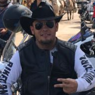
Nombre: Alejandro
Apodo: Padre Mío
Especie: Humano
Aunque ama a los tres, es evidente para todos su fascinación con las gatas. Suele consentirlas con juguetes y comprando cualquier cosa que pueda gustarles. Presume a sus gatas en su trabajo a tal
punto que pueden ser consideradas celebridades. Muchos dirían que "las molesta mucho", pero es su forma de mostrar amor.
Tiene una relación complicada con las gatas porque no son especialmente amorosas, pero esto no significa que sea una relación mala.
Hermanos Adoptivos

Nombre: Mi
Apodo: Hera, Pelusa
Especie: Gato
Apodo: Hera, Pelusa
Especie: Gato
Ama la destrucción y atacar a todos, especialmente a la Apestosa. Fue adoptada hace menos de un año. Abandonada por su madre fue encontrada debajo de un automóvil,
afortunadamente hizo ruido antes de que alguien fuera a usar el vehículo. Sus habitos como gata son muy extraños, pues a pesar de pasar tiempo con la Apestosa, parece
que aún no se acostumbra a ser una gata. Fue anunciada por toda la escuela buscando hogar, pero la fuí a conocer y decidí convencer a mis papás. Increíblemente lo logré
y tengo muchos rasguños como consecuencia. Inesperadamente, siempre huele bien, específicamente a bebé.

Nombre: Perro
Apodo: Kirón
Especie: Perro
Apodo: Kirón
Especie: Perro
Ama la destrucción y atacar a todos, especialmente a la Apestosa. Fue adoptada hace menos de un año. Abandonada por su madre fue encontrada debajo de un automóvil,
afortunadamente hizo ruido antes de que alguien fuera a usar el vehículo. Sus habitos como gata son muy extraños, pues a pesar de pasar tiempo con la Apestosa, parece
que aún no se acostumbra a ser una gata. Fue anunciada por toda la escuela buscando hogar, pero la fuí a conocer y decidí convencer a mis papás. Increíblemente lo logré
y tengo muchos rasguños como consecuencia. Inesperadamente, siempre huele bien, específicamente a bebé.
Album


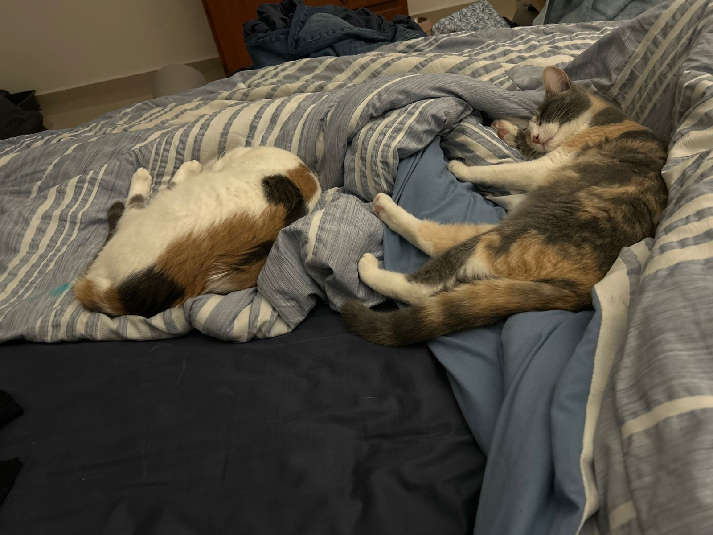
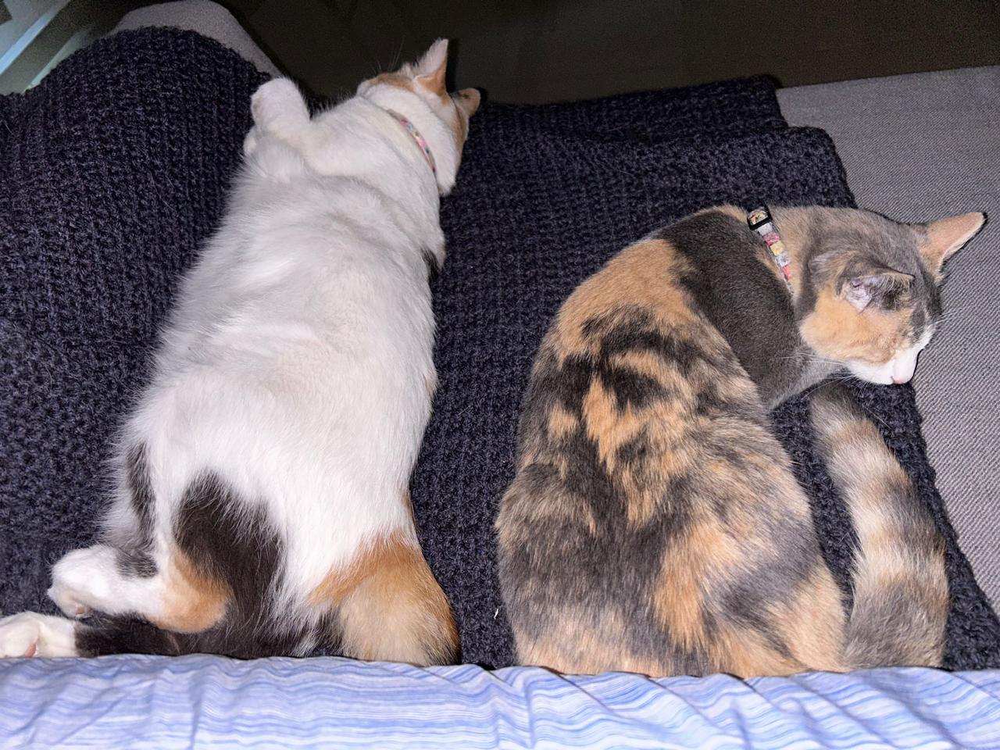


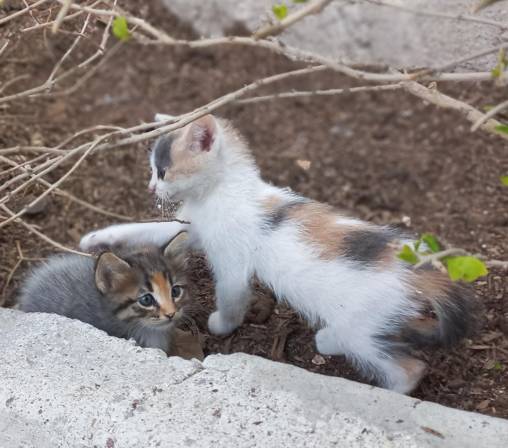
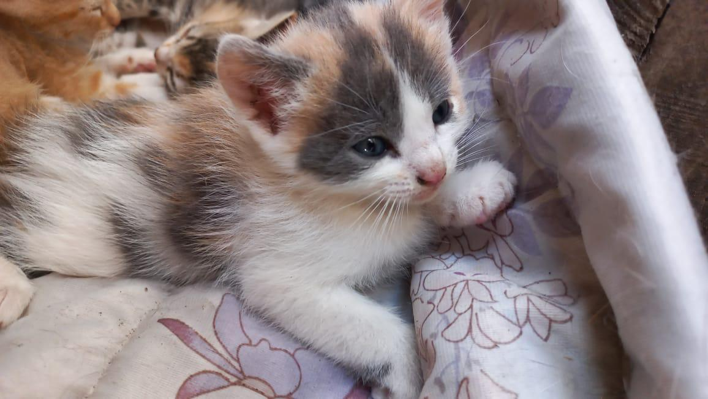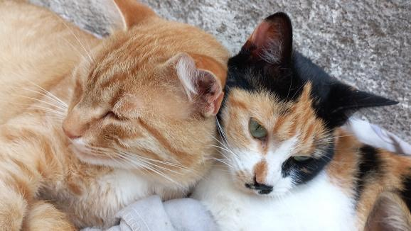

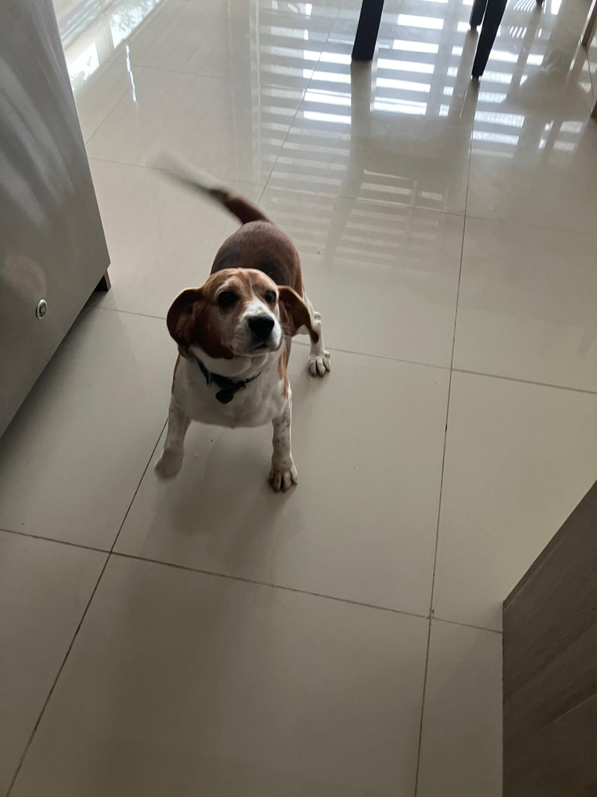
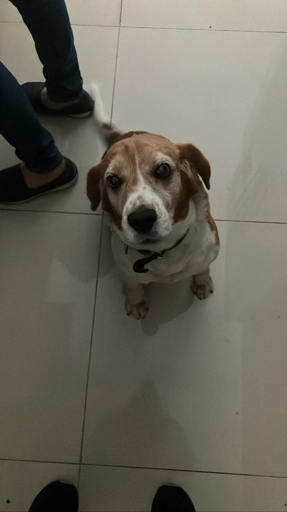
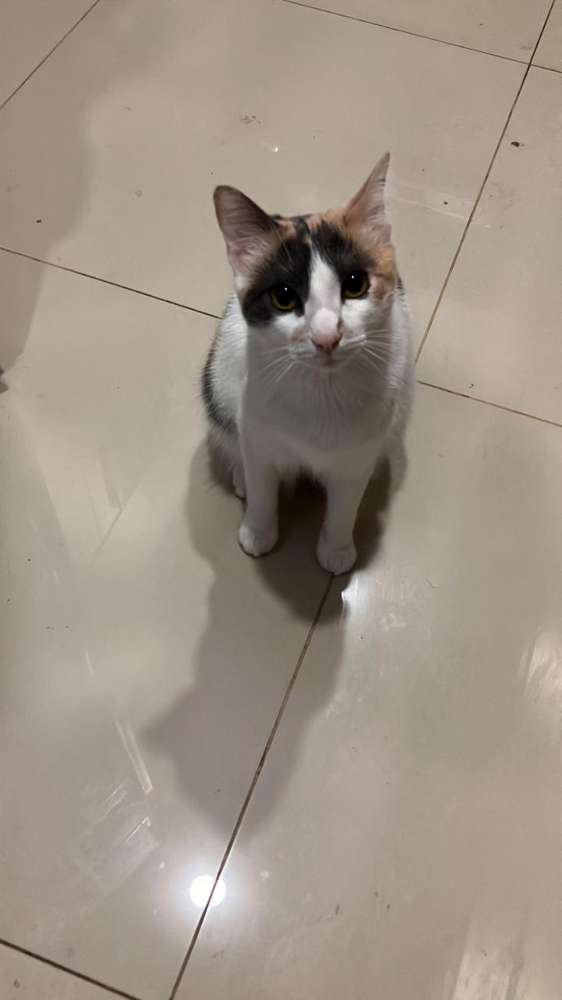
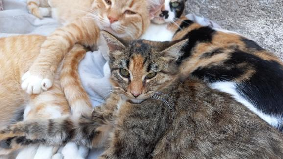


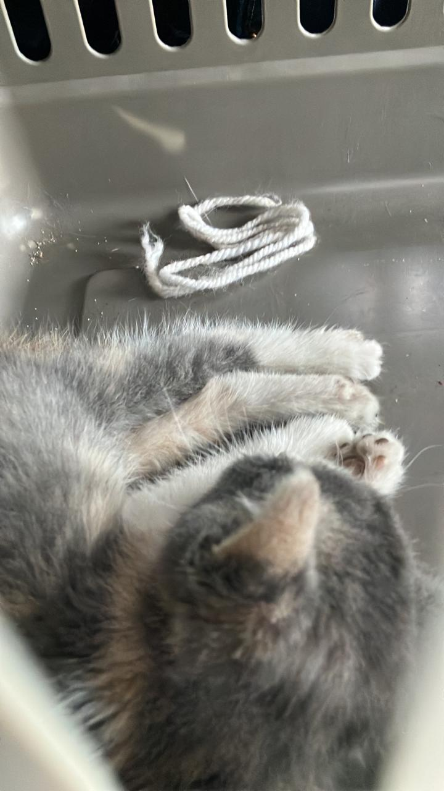
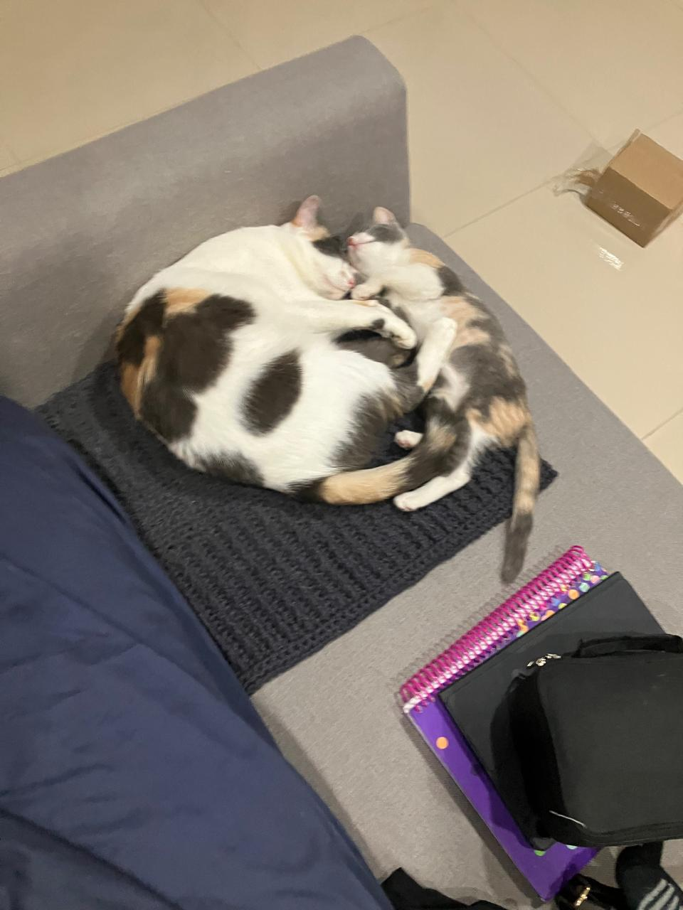
Preguntas
Describe Material design
Es un estilo de diseño desarrollado por Googlese enfoca en los aspectos visuales en Android, aunque también aplica a diferentes páginas web y plataformas. Los elementos gráficos que se iban a agregar en la interfaz de usuario se crearon con materiales físicos para analizarlos.
Bustos, J. L. (2024, 23 octubre). ¿Qué es el material design? | KeepCoding Bootcamps. KeepCoding Bootcamps. https://keepcoding.io/blog/que-es-material-design/